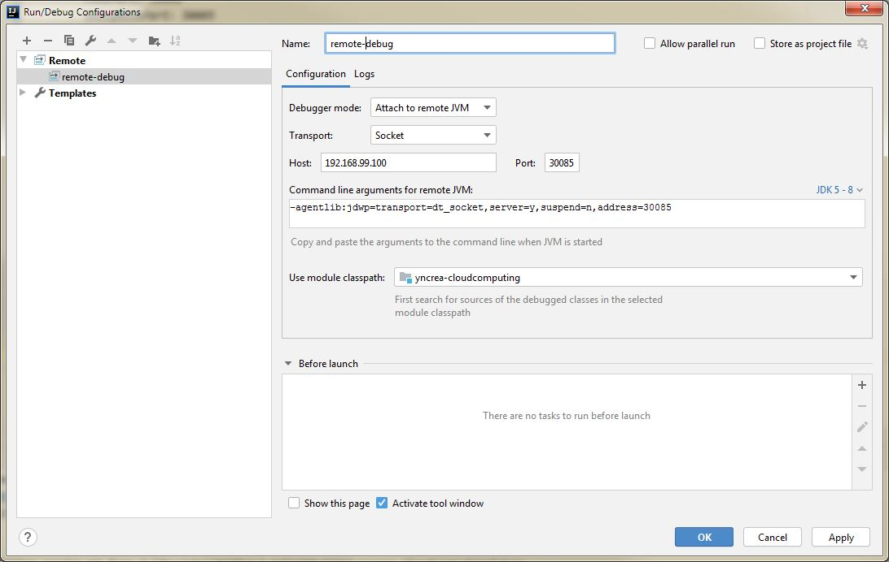

Kubernetes Lab
We saw that Docker helps creating Containers. Now we need to manage these containers : here comes Kubernetes, the "Container Orchestrator", also called "K8S".
Please visit their website explaining in details what is K8S ...
In this lab, we will use Minikube as a local kubernetes, for develoment only.
Info
No matter if you used Gokube for previous Labs, it is running Minikube behind the scenes  If you used Docker Desktop you don't have Minikube but an embedded K8S Cluster working the same way, all good !
If you used Docker Desktop you don't have Minikube but an embedded K8S Cluster working the same way, all good !
Simple Application Deployment
-
Verify that you can access Kubernetes:
1
kubectl versionIf you see a
Server Versionlike below, it means your Kubernetes CLI can connect to your Kubernetes VM:1 2 3
$ kubectl version Client Version: version.Info{Major:"1", Minor:"13", GitVersion:"v1.13.10", GitCommit:"37d169313237cb4ceb2cc4bef300f2ae3053c1a2", GitTreeState:"clean", BuildDate:"2019-08-19T10:52:43Z", GoVersion:"go1.11.13", Compiler:"gc", Platform:"linux/amd64"} Server Version: version.Info{Major:"1", Minor:"13", GitVersion:"v1.13.10", GitCommit:"37d169313237cb4ceb2cc4bef300f2ae3053c1a2", GitTreeState:"clean", BuildDate:"2019-08-19T10:44:49Z", GoVersion:"go1.11.13", Compiler:"gc", Platform:"linux/amd64"} -
Create the folder
src/kubernetesin your project. -
Download the following file to your the newly created folder:
-
Open the file in an editor and verify that the
image:key is referencing your previously built image. -
Deploy your application with the following command:
1
kubectl apply -f src/kubernetes/deployment.yaml -
Verify that your application is running properly:
1
kubectl get deploymentYou shoud now see one running Pod, which is scheduled by the Deployment that you just created.
Tip
The number of pods (more specifically, the number of containers) running is displayed in the "READY" column.
1/1 means 1 container is working fine out of 1 expected, all good
 !
!Info
Even if you have one pod running, if now try to access your application REST APIs through your browser, it should NOT work.
(Unless you forgot to delete the docker container from previous Lab, in this case, the old container is repsonding, not the newly created pod !) -
You can also check the running Pods in your Kubernetes cluster by typing:
1
kubectl get podsThis will give a list of running instances (a.k.a. Pods) of your application.
Tip
Write down the name of the Pod, you'll need it later for reference.
-
In order to access your application, you have to deploy a Kubernetes Service.
Download the following file to your kubernetes folder:and apply the following command:
1
kubectl apply -f src/kubernetes/service.yaml -
You have now deployed a so called NodePort Kubernetes Service. It opens a dedicated port on your Minikube VM, through which you can access the according service.
You can find the associated port number by typing:
1
kubectl get svcIn the example below, the port number would be 30080:
1 2 3 4 5
$ kubectl get svc NAME TYPE CLUSTER-IP EXTERNAL-IP PORT(S) AGE kubernetes ClusterIP 10.96.0.1 <none> 443/TCP 14d yncrea-hellomicro-service NodePort 10.103.108.153 <none> 80:30080/TCP 2m15sInfo
If not set in the service, Kubernetes would allow a random NodePort between 30000 and 32767.
-
In your browser, open the IP of your Minikube VM (which you retrieved in the docker lab) and add the port that you retrieved from the last command, e.g.: http://minikube-ip:30080.
Tip
When using Docker Desktop embedded K8S in place of minikube, you can directly hit on http://localhost:30080 !
Success
You should see "Hello World" example from before, but it's hosted in Kubernetes
 .
. In addition you will notice that the micro service is now displaying the hostname.
Indeed, now the container is orchestrated by kubernetes, and kubernetes filled the default env vars such as HOSTNAME used in our microservice Java Code ;)
Application Scaling
-
Now you'll see the scaling capabilities of Kubernetes. Enter the following command:
1
kubectl.exe scale deployment/yncrea-hellomicro --replicas=3With this command, you update the Kubernetes Deployment and instruct it to have a total of three replicas.
Kubernetes will handle that by instantiating two additional Pods to handle more workload.
You can easily check by doing
kubectl get pods. -
Refresh your browser several times and monitor how the hostname of your microservice changes.
You may need to use
CTRL + F5Kubernetes is loadbalancing your request for you !
Success
Congratulations, you just learned how to scale a service in Kubernetes !
Application Config
-
For the next step, we we'll see how to configure an application in Kubernetes.
You might have noticed that in the main Java Class, we are referencing an environment variableGREETINGwith the default value "You".
In a first step, we will change the Kubernetes deployment and modify the environment variable section the Pod template:1
kubectl edit deployment yncrea-hellomicroThen modify the
GREETINGvariable so the µS will greet yourself, and save.The deployement should be
Edited.Warning
A K8S ressource edited with
kubectl editcommand is temporary.The modification will be lost when deleting / re-deploying the app.
The modificatin needs to be reported to the file
deployment.yamlafter you are satisfied with the result to make it permanent at each app deployment. -
Refresh your browser, and see how to greeting changed.
-
Now let's use another mean to configure our application: the Kubernetes ConfigMap. Download the sample ConfigMap to your
src/kubernetesfolder:This way, you can decouple the application from the deployment configuration and therefore ease the reusability of your application.
You can deploy the ConfigMap with the following command:
1
kubectl apply -f src/kubernetes/configmap.yaml -
Now, you'll have to modify your deployment in order to consume the ConfigMap:
1
kubectl edit deployment yncrea-hellomicroAnd edit the file in the following way:
1 2 3 4 5 6 7 8
spec: containers: - env: - name: GREETING valueFrom: configMapKeyRef: key: greeting name: yncrea-hellomicro-configmap -
Refresh your browser, and see how to greeting changed.
Success
Congratulations, you just learned how to configure an application in Kubernetes unsing Configmaps !
Application Secrets
Kubernetes also supports objects of the type Secret, that are meant to store sensitive data.
Secrets can either be injected as environment variables or mounted in the Pods filesystem.
As you already learned how to inject environment variables, let's now inject the Kubernetes secret as a file into our pod.
-
Deploy a secret in our Kubernetes cluster:
1
kubectl create secret generic yncrea-hellomicro-secret --from-literal=secret.txt="my very secret secret agent name"Tip
You can also create Secrets from a file. It will be usefull later to automatize our deployment.
-
Update your Pod definiton (deployment) to mount the yncrea-hellomicro-secret secret in
/var/secret/and to consume it :1
kubectl edit deployment yncrea-hellomicroAnd edit the file in the following way:
1 2 3 4 5 6 7 8 9 10 11 12 13 14 15 16 17 18 19 20 21 22 23 24 25 26 27 28 29 30 31 32 33 34 35 36
spec: containers: - env: - name: GREETING valueFrom: configMapKeyRef: key: greeting name: yncrea-hellomicro-configmap - name: MY_SECRET valueFrom: secretKeyRef: key: secret.txt name: yncrea-hellomicro-secret image: test/cloudcomputing:latest imagePullPolicy: IfNotPresent name: yncrea-hellomicro ports: - containerPort: 8080 name: http protocol: TCP resources: {} terminationMessagePath: /dev/termination-log terminationMessagePolicy: File volumeMounts: - mountPath: /var/secret name: yncrea-hellomicro-secret readOnly: true dnsPolicy: ClusterFirst restartPolicy: Always schedulerName: default-scheduler securityContext: {} terminationGracePeriodSeconds: 30 volumes: - name: yncrea-hellomicro-secret secret: secretName: yncrea-hellomicro-secret -
Refresh your browser, and see how the /secret API changed and is now displaying your decoded secret !
Success
Congratulations, you just learned how to configure an application in Kubernetes using Secrets !
Cleanup
Before going to next steps, it is important to cleanup all this *** we created manually to not conflict with later all-in-one deployment with Charts.
kubectl delete deployment yncrea-hellomicro
kubectl delete service yncrea-hellomicro-service
kubectl delete cm yncrea-hellomicro-configmap
kubectl delete secret yncrea-hellomicro-secret
Helm Charts
To deploy our containers on kubernetes, we could create k8s objects and deploy them individually as above.
But why not creating a single release of our microservice deployment, nicely packaged with all the neeeded k8s objects ?
We would then be able to install, upgrade, delete ... any release of our µS, in one single command, with one single package  !
!
The solution is : Helm Charts. Have a look to their awesome documentation  !
!
-
Create the Chart
According to documentation, we may adopt the appropriate structure.
In our case we have a very simple deployment and we DON'T need :
-
The
chartsdirectory since we have no subcharts -
The
crdsdirectory since we have no custom ressourcesInfo
You can create the
Optionalfiles (documentation mainly) if you want to.
So let's proceed :
-
Create the folders
src/helm/chart/yncrea-hellomicro.Warning
The last folder MUST be named according to your Chart name ! (to define in the
Chart.yamlfile) -
Inside, create the
templatesdirectory and move there the k8s objects we created previously :deployment.yamlservice.yamlconfigmap.yaml
-
Put the file secret.yaml in your Chart's templates directory along side other files.
Info
This is the secret we created manually before, now provisionned as a k8s ressource file for automation purpose !
-
Edit the
deployment.yamlfile (if not done already) to report the changes done previously (when we usedkubectl editcommands) to get the env variables from the Configmap and the Secret. -
In the
Chartfolder (src/helm/chart/yncrea-hellomicro), download and put :Info
Chart.yamlis the declaration of your Chartvalues.yamlis the file meant to configure your Chart -
Use the values defined in
values.yamlto configure your Chart.Solution for
deployment.yaml1 2 3 4 5 6 7 8 9 10 11 12 13 14 15 16 17 18 19 20 21 22 23 24 25
apiVersion: apps/v1 kind: Deployment metadata: name: yncrea-hellomicro labels: app.kubernetes.io/name: yncrea-hellomicro spec: replicas: {{ .Values.replicaCount }} selector: matchLabels: app.kubernetes.io/name: yncrea-hellomicro template: metadata: labels: app.kubernetes.io/name: yncrea-hellomicro spec: containers: - name: yncrea-hellomicro image: {{ .Values.image.repository }}:{{ .Values.image.version }} imagePullPolicy: IfNotPresent ports: - name: http containerPort: 8080 protocol: TCPSolution for
service.yaml1 2 3 4 5 6 7 8 9 10 11 12 13
apiVersion: v1 kind: Service metadata: name: yncrea-hellomicro-service spec: selector: app.kubernetes.io/name: yncrea-hellomicro ports: - protocol: TCP port: 80 targetPort: 8080 nodePort: {{ .Values.service.nodePort }} type: {{ .Values.service.type }}
-
-
Deploy the Chart to Minikube using Helm
Simply use the Helm CLI to deploy the Chart :
1
helm install silly-unicorn src/helm/chart/yncrea-hellomicroNote
We fix the name of the release (
silly-unicorn) in order to be able to upgrade/delete it automatically.Otherwise, Helm would assign a random name.
Verify your Chart deployed properly the µS (its deployment, pods, configmap, secret and service).
Check everything is working as expected by accessing your REST APIs (
/,/hello,/secret) in your browser as done before.Success
Congratulation, you deployed your fisrt Chart (or Application) using Helm !
-
Upgrade the release
At this moment, we have our Chart ready, our app is running.
But what if we want to update it ?
Let's do a change in the code and add a new API
/newreturning a String "Hello from New API"-
Rebuild your project to publish your new release.
-
Then try upgrading your application using :
helm upgrade silly-unicorn src/helm/chart/yncrea-hellomicro -
Check the
/newAPI is there and returning expected value.Success
Congratulation, you upgraded your first application using Helm !
-
Deploying automatically with Maven :
Automatize the build using Maven Helm plugin :
-
Find the latest Helm plugin online
Add the dependency to you pom.
Solution
<dependency> <groupId>com.kiwigrid</groupId> <artifactId>helm-maven-plugin</artifactId> <version>5.4</version> </dependency> -
Configure the plugin to :
- Verify the Chart in the test phase using the lint goal
-
Package the Chart into an archive in the package phase, using the package goal.
Solution
1 2 3 4 5 6 7 8 9 10 11 12 13 14 15 16 17 18 19 20 21 22 23 24 25 26 27 28 29 30 31 32 33
<build> <plugins> ... <plugin> <groupId>com.kiwigrid</groupId> <artifactId>helm-maven-plugin</artifactId> <version>5.4</version> <configuration> <chartDirectory>${project.basedir}/src/helm/chart/yncrea-hellomicro</chartDirectory> <chartVersion>${project.version}</chartVersion> <outputDirectory>${project.build.directory}</outputDirectory> <!-- This is the related section to use local binary with auto-detection enabled. --> <useLocalHelmBinary>true</useLocalHelmBinary> </configuration> <executions> <execution> <id>helm-lint</id> <phase>test</phase> <goals> <goal>lint</goal> </goals> </execution> <execution> <id>helm-package</id> <phase>package</phase> <goals> <goal>package</goal> </goals> </execution> </executions> </plugin> </plugins> </build>
-
Finally use a third plugin :
exec-maven-pluginin order to (in the mavenpre-integration-testphase):- Delete the fixed-name release
silly-unicornif it exists. -
Deploy the new release with the same name, of the Chart we just built
Solution
1 2 3 4 5 6 7 8 9 10 11 12 13 14 15 16 17 18 19 20 21 22 23 24 25 26 27 28 29 30 31 32 33 34 35 36 37 38
<build> <plugins> ... <plugin> <groupId>org.codehaus.mojo</groupId> <artifactId>exec-maven-plugin</artifactId> <version>${exec-maven-plugin.version}</version> <executions> <execution> <id>exec-helm-delete</id> <phase>pre-integration-test</phase> <configuration> <executable>helm</executable> <commandlineArgs>delete silly-unicorn --purge</commandlineArgs> <successCodes> <successCode>0</successCode> <successCode>1</successCode> </successCodes> </configuration> <goals> <goal>exec</goal> </goals> </execution> <execution> <id>exec-helm-install</id> <phase>pre-integration-test</phase> <configuration> <executable>helm</executable> <commandlineArgs>install ${project.build.directory}/${project.artifactId}-${project.version}.tgz --name silly-unicorn --wait --debug</commandlineArgs> </configuration> <goals> <goal>exec</goal> </goals> </execution> </executions> </plugin> </plugins> </build>
- Delete the fixed-name release
-
Last step, test the whole Docker + Helm chart build and deploy using maven
 ! It will create the docker image, push it to minikube registry. Then it will build the Helm chart, and install it to minikube, using the just pushed docker image.
! It will create the docker image, push it to minikube registry. Then it will build the Helm chart, and install it to minikube, using the just pushed docker image.mvn clean install-
Access your application REST APIs with your browser.
Example : http://192.168.99.100:30080/hello
Success
Congratulation, you can now do any code change on the application java code or the chart config, you just have to execute a
mvn clean installcommand to build and redeploy your latest app version automatically !
-
Remote Debug
In order to develop efficiently, remote debug is a must have.
-
First we need to update our
Dockerfileto bootstrap a remote debug port (8000).FROM java:8 EXPOSE 8080 ARG JAR_FILE=target/*.jar COPY ${JAR_FILE} app.jar ENTRYPOINT ["java", "-agentlib:jdwp=transport=dt_socket,address=8000,server=y,suspend=n","-jar","/app.jar"]Warning
Don't forget to rebuild your Docker Image and to push it again to your local registry (or DockerHub).
-
Then we need to expose this port by modifying the
deployment.yaml... ports: - name: http containerPort: 8080 protocol: TCP - name: remote-debug containerPort: 8000 protocol: TCP -
And finally create a
NodePortin theservice.yamlto make the debug port available from outside the K8S ClusterTip
A good practice is to make this
NodePortconfigurable through thevalues.yaml#values.yaml service: type: NodePort nodePort: 30080 debugNodePort: 30085#service.yaml ports: - name: http protocol: TCP port: 80 targetPort: 8080 nodePort: {{ .Values.service.nodePort }} - name: remote-debug protocol: TCP port: 8000 targetPort: 8000 nodePort: {{ .Values.service.debugNodePort }} -
We can now update your Chart with the latest docker image and changes.
-
Let's create a remote debug configuration in IntelliJ Idea, targetting our remote debug NodePort :

-
Try run this remote debug configuration, place a breakpoint in the Java Code of the
/helloAPI Method.
Call the REST API using your browser and observe the execution stopping at your breakpoint.Success
Congratulation, you can now deploy Helm Charts in Kubenretes & remote debug your Java Applications !